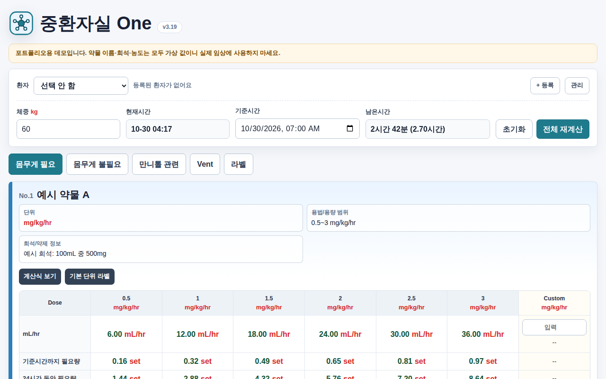
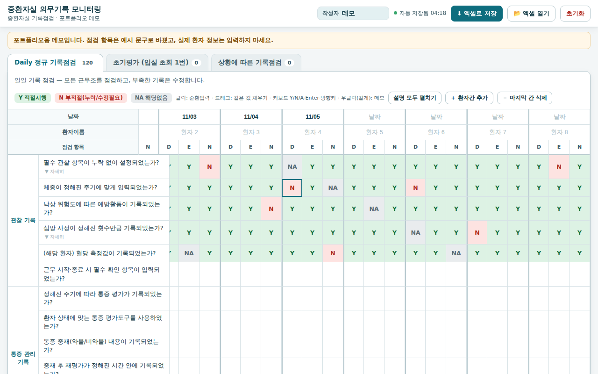
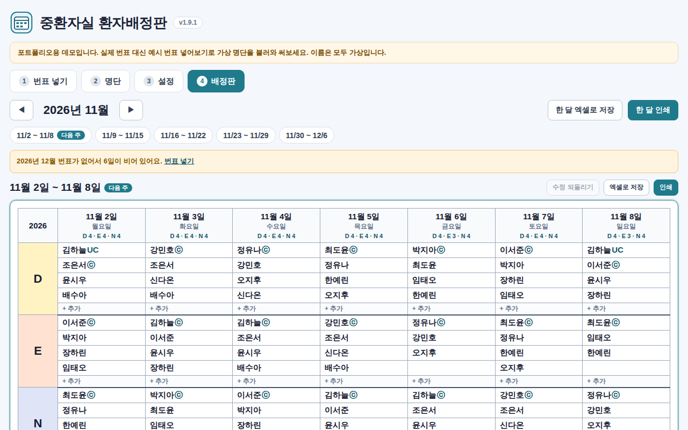

중환자실 One
약물 주입 속도부터 인공호흡기 라벨까지, 근무 중 계산을 한 화면에
- 문제
- 약물 주입 속도, 만니톨 용량, 인공호흡기 설정값을 따로따로 계산하고, 라벨은 손으로 적었습니다.
- 하는 일
- 체중과 기준시간을 한 번 넣으면 약물별 주입 속도와 필요량을 함께 계산합니다. 만니톨, Osmol gap, IBW, P/F ratio, Cdynamic 계산과 인공호흡기 라벨 인쇄도 같은 화면에서 처리합니다.
- 설계
- 권장 범위를 벗어난 용량과 체중이 빠진 계산은 바로 경고하고, 라벨은 미리보기 그대로 인쇄됩니다. 병동에 배포해 지금도 쓰고 있습니다.
약물 이름, 희석, 농도는 모두 가상 값입니다.

의무기록 모니터링
엑셀 점검표를 그대로 옮긴, 근무조별 기록 점검 도구
- 문제
- 근무조별 기록 점검을 엑셀 표에 직접 입력하느라 칸을 놓치거나 잘못 넣기 쉬웠습니다.
- 하는 일
- 점검표를 화면으로 옮겨 클릭과 키보드(Y, N, A)로 빠르게 입력하고, 같은 값은 끌어서 채웁니다. 결과는 기존 제출 양식 그대로의 엑셀 파일로 저장하고, 그 파일을 다시 불러와 이어서 씁니다.
- 설계
- 화면의 칸과 엑셀 양식의 셀 위치를 하나하나 맞춰, 화면과 파일 사이에서 값이 어긋나지 않게 했습니다. 메모는 엑셀 셀 메모로 그대로 오갑니다.
점검 항목은 예시 문구로 바꿨습니다.

환자배정판
번표를 넣으면 주간 근무 배정판이 만들어지는 차지 간호사용 도구
- 문제
- 매주 번표를 엑셀 매크로로 정리한 뒤, 배정판에 다시 옮겨 적어 공지했습니다.
- 하는 일
- 번표를 붙여넣거나 엑셀 파일로 넣으면 근무코드를 정리해 주간 배정판을 만듭니다. 차지와 프리셉터 표시, 이름 끌어서 옮기기, 인쇄와 엑셀 저장까지 처리합니다.
- 설계
- 번표마다 다른 근무코드를 규칙표로 바꿔 배정판의 Day, Evening, Night에 묶습니다. 손으로 고친 칸은 따로 표시해, 자동 결과와 사람이 바꾼 결과를 구분할 수 있습니다.
'번표 넣기'에서 예시 번표 넣어보기를 누르면 가상 명단으로 바로 써볼 수 있습니다.

세 도구에 공통으로 지킨 것
- 파일 하나로 실행
- 병원 PC에 프로그램을 설치할 수 없어서, HTML 파일 하나만 열면 동작하게 만들었습니다.
- 데이터는 밖으로 나가지 않음
- 외부 서버와 통신하지 않고, 인터넷이 없어도 동작합니다.
- 기존 양식을 바꾸지 않음
- 현장에서 쓰던 엑셀 양식과 그대로 주고받아, 새 도구를 위해 업무 방식을 바꾸지 않아도 됩니다.
- 실수를 막는 장치
- 범위 경고, 두 번 눌러야 되는 초기화, 미리보기 후 인쇄, 손으로 고친 칸 표시처럼 잘못된 값이 그대로 쓰이지 않게 했습니다.
비식별화 안내
병원 이름, 직원과 환자 이름, 병원 고유의 약물 희석 기준과 처방코드, 내부 점검 문구, 파일 속 작성자와 프린터 정보는 모두 지우거나 가상 값으로 바꿨습니다.
이 데모는 설계와 동작을 보여주기 위한 것이므로 실제 임상에 사용하지 마세요.